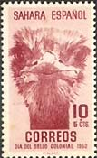
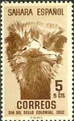
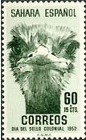
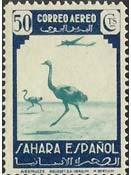
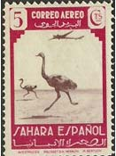
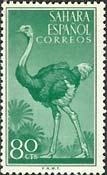
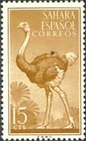
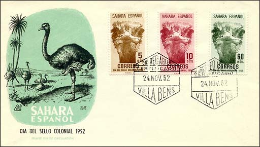

|
|

|
SAHARAN NATURE
OSTRICHES
|

|
Ostriches are classified in the phylum
Chordata ,
subphylum Vertebrata, class Aves, order Struthioniformes, family
Struthionidae
Ostrich
is the common name for a large, flightless bird. Now found only in Africa,
fossils indicate that the ostrich once also lived throughout Europe and
Asia. Ostriches are the largest and strongest of living birds, attaining a
height from crown to foot of about 2.4 m (about 8 ft) and a weight of up
to 136 kg (300 lb). They have long necks and small heads, with large eyes
and short, broad beaks. They spread their small wings when running and
have long, powerful legs that are used for defense. The feet have only two
toes. Male ostriches are black, with white wings and tail. The white
feathers of the male, which are large and soft, are the ostrich plumes of
commercial value. The female is a dull grayish brown.
|
 |
 |
 |
Ostriches are rapid runners and can attain about 65 km/h (about 40 mph).
The males are polygamous and travel about in hot, sandy areas with three
or four females, or in groups of four or five males accompanied by mates
and young. The females lay their yellowish-white eggs together in a
single large depression in the sand. The eggs weigh about 1.4 kg (about
3 lb) each and have a volume of about 1.4 liters (about 3 pt). The male
sits on them at night, and the female incubates them by day.
|

|

|

|

|
In
the last half of the 19th century ostrich farming, or the breeding of
domesticated ostriches for their plumes, was carried on extensively in
South Africa, Algeria, Australia, France, and the United States. Ostrich
plumes were used in hat making and dressmaking. Farming declined as the
demand for ostrich plumes became almost negligible; however, the
introduction of ostrich hide as a luxury leather has renewed interest in
ostrich farming. (after Microsoft Encarta on-line
http://encarta.msn.com)

The selection of Spanish Sahara issues, dedicated to ostriches,
covers the 1940th to the 1960th years.
Credits: many thanks to Tracy Barber
(USA) for the scans.
|